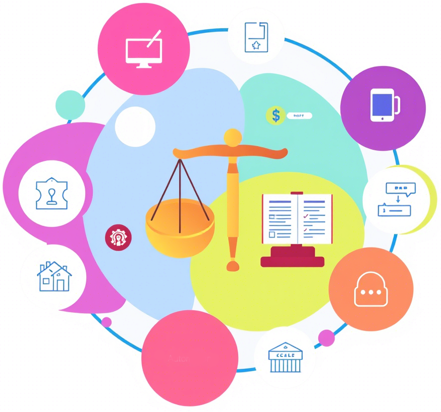

Контент находится в разработке

Программа профессиональной переподготовки «Автоматизация юридических процессов» имеет целью формирование у обучающихся по специальностям и направлениям подготовки, не отнесенным к ИТ-сфере дополнительных цифровых компетенций в области создания алгоритмов и программ, пригодных для практического применения, в том числе компетенций, необходимых для работы в качестве одного из участников команды разработки программного обеспечения в сфере автоматизации юридических процессов.
Целью данной программы профессиональной переподготовки также является получение слушателями развернутого представления о ключевых процедурах управления бизнес-процессами: моделировании бизнес-процессов, их анализе и совершенствовании. Целью подготовки слушателей по программе является получение компетенции, необходимой для выполнения нового вида профессиональной деятельности в области информационных технологий — управление информационными технологиями в экономике и государственном управлении; приобретение новой квалификации «Менеджер по информационным технологиям (6 уровень квалификации)».
Юриспруденция будущего — это цифровые решения. Освойте инструменты, которые уже сейчас сокращают время подготовки документов на 70% и минимизируют человеческие ошибки.
Не просто теория, а реальные кейсы: работа с AI-ассистентами, блокчейн-договорами и системами анализа прецедентов. Выпускники программы создают цифровые продукты, а не просто изучают их.
Работодатели ищут юристов, которые говорят на языке технологий. Добавьте в резюме навыки работы с LegalTech — получите преимущество в 3 раза чаще на топовых позициях крупнейших компаний.
Автоматизируйте рутинную работу: формирование исков, проверку контрактов, отслеживание изменений законодательства. Уделяйте больше внимания стратегии, клиентам и саморазвитию.
Доступ к закрытым вебинарам с создателями юридических IT-стартапов, менторская поддержка и стажировки в компаниях-лидерах отрасли. Ваша сеть контактов станет вашим главным активом.
Как только появляются новые законы, ИИ-инструменты или судебные прецеденты — вы первым получаете актуальные знания. Ваша экспертиза всегда будет на острие прогресса и юриспруденции и IT.
После курса вы сможете внедрять системы кибербезопасности для юридических данных и защищать компании от цифровых рисков — навык, который к 2026 году будет требоваться в 89% вакансий юридического сектора.
Онлайн-платформа с интерактивными симуляторами и записями судебных заседаний в VR. Составляйте документы в режиме реального времени вместе с коллегами из разных стран — ваш офис теперь там, где есть интернет.
Программа соответствует профстандартам Минтруда и дает право на ведение новой деятельности. 93% выпускников отмечают повышение дохода в первые 6 месяцев после завершения курса.